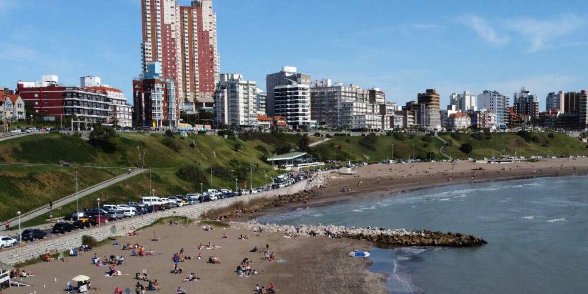

La gastronomía de la costa atlántica argentina es otro atractivo
destacado. Los visitantes pueden disfrutar de pescados y
mariscos frescos, así como de platos típicos de la región.
Los restaurantes a lo largo de la costa ofrecen una variedad
de opciones culinarias, desde tradicionales parrillas argentinas
hasta restaurantes especializados en cocina internacional.
Buenos Aires y Costa Atlantica
Descubre Cafayate: Tesoro del Vino y Paisajes Impresionantes
La provincia de Buenos Aires es la más grande del país y alberga a la capital, Buenos Aires.
Buenos Aires es la ciudad más grande y cosmopolita de Argentina, conocida por su arquitectura,
cultura, vida nocturna y actividad económica.

Conclusión:
En resumen, la costa atlántica argentina es un destino vibrante y
diverso que combina hermosas playas, paisajes naturales, actividades
recreativas y una rica oferta cultural. Ya sea para relajarse en la playa,
disfrutar de la vida nocturna o explorar la naturaleza, la costa atlántica
argentina ofrece experiencias inolvidables para todos los gustos.